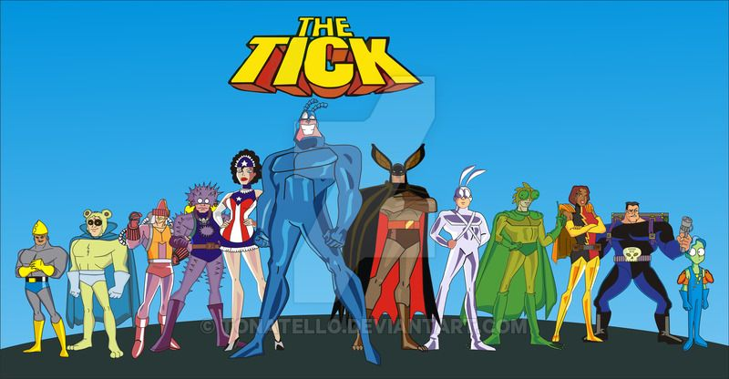
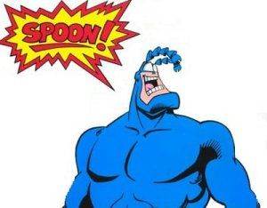

About The Tick
The Tick is a superhero who wears a blue bug suit. His origins are a mystery unknown to everyone including the hero. Along with his trusty sidekick Arthur and a group of super pals, they keep The City safe from the nefarious machinations of The Phalanx of Gloom, The Evileers, and other ne'er-do-wells who threaten the citizenry.
The Tick and the crew
Characteristics of The Tick
- Big and blue with superhuman strength and mass
- Nigh-invulnerable
- Drama power!
- Catchphrase that strikes fear into his enemies 
Allies
The Tick has several allies who help him keep The City Safe. You can learn more about them below:
Villains
The Tick and friends battle a whole assortment of villains who are hellbent on bringing The City to its knees. Click the links below to learn more about them: